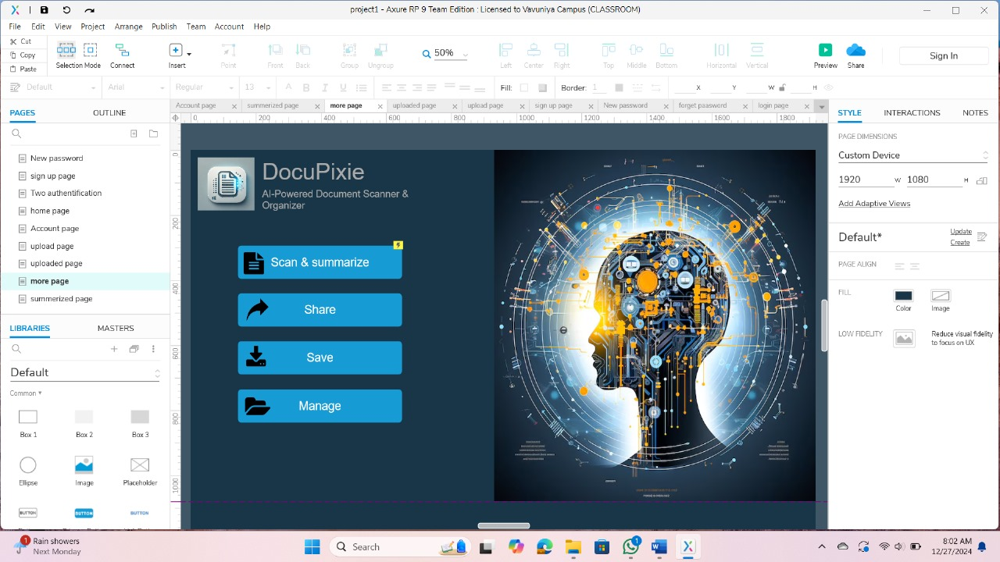

SOFTWARE ENGINEERING - IT2122
SYSTEM DESIGN
A Comprehensive Overview of Architectures, Principles, Diagrams, and Patterns
Introduction to System Design
Definition
System design is the process of defining the architecture, modules, interfaces, and data for a system to satisfy specified requirements.
Purpose
- Bridges the gap between requirements and implementation.
- Ensures the system is scalable, reliable, and maintainable.
The Process & Importance
Gathering and formalizing constraints and needs.
Defining architecture and major modules.
Defining code components, algorithms, and logic.
Visually modeling structures, states, and workflows.
Why it Matters in SE:
- Enables systematic problem-solving
- Enhances collaboration across cross-functional teams
High-Level vs. Low-Level Design
High-Level Design (HLD)
- Focus: System architecture, global structure, and integration.
- Includes: Module boundary designs, database schemas, and external system interfaces.
- Output: System topology diagrams, block diagrams, data flow diagrams (DFD).
- Target Audience: Architects, project managers, and lead developers.
Low-Level Design (LLD)
- Focus: Internal component design, detailing specific classes and methods.
- Includes: Local algorithms, state logic, classes, data structures, and APIs.
- Output: Class diagrams, pseudo-code, database table details, unit test plans.
- Target Audience: Programmers, developers, and QA engineers.
Key Differences: A Comparison
| Parameter | High-Level Design (HLD) | Low-Level Design (LLD) |
|---|---|---|
| Scope | System-wide macro view | Module-specific micro view |
| Core Focus | What system needs to do (Architecture) | How components will do it (Implementation) |
| UML Diagrams | Component diagrams, Deployment diagrams | Class diagrams, Sequence diagrams |
Design Principles: Cohesion and Coupling
Cohesion
Definition: The degree of relatedness and single-focused responsibility of functions within a single module.
A module should do one thing and do it well, grouping tightly related tasks together. Makes modules readable and reusable.
Coupling
Definition: The degree of direct dependency and interconnection between different modules.
Minimize connections between modules. If one module changes, it shouldn't force cascading changes across the system.
Interactive Modular Simulation
Toggle the configuration below to see how modular design impacts code dependencies.
Layered Architecture in System Design
Layered (n-tier) architecture partitions concerns, allowing each layer to only interact with the layer directly below it.
Presentation Layer
User Interface & User InteractionBusiness Logic Layer
Business Rules & Data ProcessingData Access Layer
Data Storage, Queries & RetrievalExplore the Architecture
Click on any layer of the stack on the left to see how it separates concerns in the **DocuPixie** application.
Presentation Layer
Client-Server Architecture
Client (Frontend)
- Hosts the graphical user interface.
- Captures user input (e.g., file upload, login details).
- Initiates requests to the server for data or processing.
Server (Backend)
- Contains core business logic.
- Authenticates requests and query databases.
- Processes requests (e.g., runs OCR or AI text summarization) and responds to the client.
Interactive Request-Response Simulator
Trigger requests from client to server and observe the message flow.
UML Diagrams for System Design
Unified Modeling Language (UML) diagrams provide standardized graphical models representing system structures and dynamic relationships.
Class Diagrams
Show classes, attributes, methods, and relationships between objects. Represents the static design structure of the system.
- SignUp/Login Form depends on UsersDB connection.
- UploadPage uses ExtractAPI and SummarizeAPI to retrieve textual details.
Sequence Diagrams
Illustrate the order of interactions between objects, showing message flow over time.
- Client initiates scanning by uploading document file.
- `ExtractAPI` extracts text using Tesseract OCR.
- `SummarizeAPI` communicates with AI API to extract key summary.
- Database records metadata and presents text/summary in UI.
Activity Diagrams
Model the workflow of a system, showcasing the operational decisions and flow steps involved in a process.
- Initial Node: File uploaded.
- Decision Node: Is OCR conversion successful?
- Fork/Join Node: Save file metadata & extract summary concurrently.
Design Patterns & Applications
Singleton
Ensures that only a single instance of a class is created throughout the application lifetime.
Factory Method
Provides a standardized interface for object creation, abstracting exact class logic.
Observer
Defines a one-to-many relationship; altering a state notifies and updates all dependents.
Click a pattern above to launch its live concept visualization!
Scalability & Performance Considerations
Horizontal Scaling
Adding more hardware nodes (servers) to distribute workloads and handle spikes in network traffic.
- Uses a Load Balancer to split user requests.
- High fault tolerance (if one server fails, others respond).
Vertical Scaling
Enhancing individual server nodes by adding resources (upgrading CPUs, RAM, storage, or GPU capability).
- Easy to implement with no architectural modifications.
- Limited by physical hardware ceilings and single-point-of-failure risks.
Performance Metrics
Horizontal Scaling Load Simulator
Increase active backend nodes to see request balancing, throughput improvements, and latency drops.
Design for Security: Best Practices
Core Security Principles
Least Privilege
Restrict user access and microservices authentication scopes to only the minimum resources necessary for their operational role.
Defense in Depth
Establish multiple redundant layers of security checks across networks, databases, layers, and code execution blocks.
Defensive Tools
- Threat Modeling: Proactively charting and identifying attack profiles before coding.
- Secure Coding Practices: Enforcing automated input sanitization, output encoding, and dependency updates.
DocuPixie Security Architecture
To protect sensitive customer scanned files, several secure layers are designed into the software:
Sign-up and passwords validate complexity parameters client-side and server-side to resist brute-force hacks.
/^(?=.*[a-z])(?=.*[A-Z])(?=.*\d)(?=.*[@$!%*?&])[A-Za-z\d@$!%*?&]{8,}$/Instead of raw string concatenation queries, queries must use SQL Parameterized Bindings.
SqlCommand cmd = new SqlCommand("SELECT * FROM Users WHERE Email = @Email", conn);
cmd.Parameters.AddWithValue("@Email", email);All raw extracted texts and scanned image binaries are encrypted using AES keys before being written to disk files.
Common Challenges in System Design
The Hard Trade-Offs
Adding servers increases network overhead and data syncing lag, which can raise baseline latencies for simple query executions.
Linking state-of-the-art serverless APIs to older monolithic database schemas without causing data corruption or bottlenecks.
Ensuring system durability and eventual data consistency (following CAP Theorem constraints) when distributed networks split.
Practical Architectural Solutions
Break system designs into smaller milestones. Build basic components, deploy, measure bottlenecks, and re-architect incrementally.
Run load/stress generators (e.g. Apache JMeter, k6) to simulate high-concurrency requests and discover failures early.
Use message brokers (e.g. RabbitMQ, Kafka) to isolate heavy workloads (like OCR conversion) from user-facing threads.
Case Study: DocuPixie Interactive Prototype
Interactive C# Windows Forms application simulation. Test the user flows (SignUp, Login, Scan & Summarize) based on Axure RP layouts.

DocuPixie - Axure RP 9 Team EditionGroup Members
Software Engineering - IT2122 | Group - 01
2021 / ICT / 22
Group Lead2021 / ICT / 34
Core Developer2021 / ICT / 43
System Architect2021 / ICT / 49
Database Designer2021 / ICT / 51
UI/UX Designer2021 / ICT / 62
QA Specialist2021 / ICT / 75
NLP Specialist2021 / ICT / 80
Security Auditor2021 / ICT / 93
DevOps Engineer2021 / ICT / 124
Documentation LeadThank You!
Questions & Answers Session